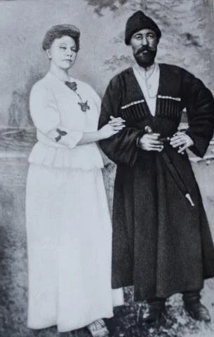

Milk kefir is a fermented probiotic drink that is renowned for its healthful properties. Studies have shown that milk kefir is correlated with a wide range of health benefits, including improved digestion, lower blood pressure and cholesterol, cancer prevention, improved immune systems, and reduced asthma and allergies. Milk kefir is a thick and slightly effervescent drink, with a sour, creamy taste.
The kefir grains and methods for making kefir were kept secret by people in the Caucasus mountains for many generations. Owning kefir grains was equated with wealth in this region. The people believed that the benefits of kefir would somehow be diminished if the secrets of making kefir were shared outside of their region. Marco Polo is said to have tried kefir, and kefir was prized as a medicinal food, yet the keys to making kefir were not shared until the early 1900’s.
Since milk kefir was a closely guarded secret, how did it ever become more widely known? This is where the story of milk kefir gets even more interesting. The Russian immunologist Dr. Ilya Ilyich Metchnikoff (who received the Nobel Prize for his work on immunity in 1908) became interested in learning about the causes of the exceptional longevity of the people in the Caucasus region and other regions. Metchnikoff came to the conclusion that soured milk, including milk kefir, was one of the keys to longevity and well-being. Following the publication of Metchnikoff’s book, The Prolongation of Life, in 1907, the All Russian Physicians’ Society became determined to use milk kefir as a medicinal treatment for their patients.
The Blandov brothers, from Moscow Dairy, were commissioned by the All Russian Physicians’ Society to obtain kefir grains from the tribes in the Caucasus mountains. However, the tribes refused to sell any kefir grains to the Blandov brothers. Undaunted, the brothers came up with a scheme to obtain the kefir grains: they would send a beautiful woman to the court of tribal Prince Bek-Mirza Barchorov, and with her allure she would obtain the kefir grains. Irina Sakharova, an employee of the Blandov brothers, was chosen for this important mission [3].
Although Irina succeeded in attracting the interest of Prince Barcharov, he refused to give her any kefir grains. Irina departed from the Prince, but tribesmen were sent to capture her with the intention of forcing her to marry the Prince. The Blandov brothers mounted a rescue of Irina before the forced marriage could take place. When Irina presented her grievance before the Czar, Prince Barcharov was ordered to make retribution to Irina. Although she was offered gold and jewels, Irina refused. She could only be compensated for what she had endured in one way: with kefir grains. The Czar ordered Prince Barcharov to give Irina 10 pounds of kefir grains!
Once the Blandov brothers had the milk kefir grains, they began making kefir for the All Russian Physicians’ Society. Kefir was used in Russian hospitals to treat a wide variety of conditions including digestive disorders, cancer, artherosclerosis, and tuberculosis
